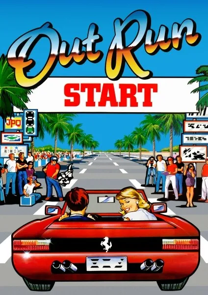

Retour à la page d'accueil | Vidéo | Screenshots | Wiki

|
Le voilà, le premier jeu SEGA ! Hourra ! Comme quoi tout arrive... J'ai pris le jeu, principalement car son tarif est plus que correct. Les autres éditeurs devraient d'ailleurs en prendre de la graine ! Mais d'un autre côté le jeu a été rentabilisé de nombreuses fois par le passé. On retrouve donc Sumo Digital, que j'adore. En fait si on ne m'avait jamais parlé des bugs de transition entre les courses je n'aurai jamais rien eu à penser de négatif du titre. La réalisation est excellente, le jeu rend bien sur télé HD et pourtant il commence à se faire vieux. Au final un très bon titre à acheter avec Megaman. |
|
OutRun est l'adaptation de la célébrissime version arcade. Vous êtes au volant d'une rutilante Ferrari Testarossa, avec à vos côtés une jolie blonde que vous tenterez d'épater grâce à vos talents de pilote.
|
© Developer: SEGA / Publisher: Sumo Digital / Plateforme: Borne d'arcade, Master System / Genre: Course de voiture / Release NA: 1986
Retour en haut de la page